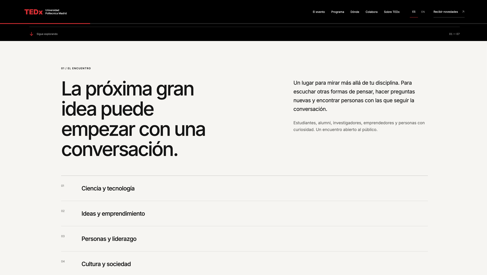

Portfolio de referencias para rediseñar la web de TEDxUniversidad Politécnica de Madrid (26 feb 2027, ETSII). Solo frontend. Cada ficha incluye capturas de escritorio y móvil, qué hace bien y qué podemos aprovechar para la UPM. Ahora incluye también el enfoque de la primera landing y lo que el equipo ha decidido que sí y que no.
Contador hasta el 26 feb 2027 a las 09:00, hora de Madrid. Muestra días y horas, sin segundos. Va en el hero, junto a la fecha y la sede, sin ocupar toda la pantalla. Después del evento cambia a «Gracias» y a los vídeos.
/partners/.Notas de la reunión del equipo, con lo que implica cada una.
/partners/ o /about/, no en la home (ver reglas).Sacado de las TEDx Rules. Lo dudoso hay que confirmarlo con nuestro contacto de TED.
/partners/, y cada logo tiene que ser más pequeño que el logo TEDx.La estructura y el contenido de tedxupm.vercel.app son sólidos. Lo que falla es la identidad: podría ser la landing de cualquier SaaS o consultora.

Combinaciones de referencias que encajan con lo que ya tenemos: el mensaje de «conectar» y «abrir perspectivas», una universidad técnica, la ETSII como sede y todavía sin ponentes confirmados.
Fotografía potente del edificio y de la Sala de la Máquina como hero, con un relato que une la historia de la escuela con el tema de la edición. Es lo más realista con los recursos que ya tenemos.
Una palabra o frase gigante que funciona como cartel (en web, en redes y en el escenario), con cuenta atrás. No necesita fotos ni ponentes, así que sirve desde hoy.
Desarrollar el diagrama de órbitas que ya hay en la web hasta convertirlo en el sistema visual: líneas, nodos y planos técnicos que «conectan» secciones. Encaja con una politécnica y con el mensaje.
Usar la X (o formas planas) como máscara de fotos y bloques de color. Es la forma más barata de tener una identidad muy TEDx y se adapta bien a los pósters de ponentes cuando lleguen.
Pulsa cualquier tarjeta para ver la captura completa de escritorio y de móvil. Las marcadas como TOP son las que más recomiendo para tomar como base.
Plantillas de conferencia con la estructura que necesitamos (ponentes, programa, sede, entradas, FAQ). Sirven para inspirarse o para copiar la estructura de componentes al reconstruir la web.
Hero tipo póster con fecha y ciudad gigantes, programa con filtros, páginas de ponente enlazadas a sus charlas y sección de accesibilidad. Es la más completa.
FramerPensada para eventos de un solo día como el nuestro: hero oscuro con fecha y sede, cuenta atrás y programa por escenarios (auditorio / Sala de la Máquina).
FramerEditorial y con personalidad: acreditaciones de ponente que cuelgan de una cinta, entradas con perforado y un «agenda builder» que guarda en el navegador sin backend.
Framer · gratisHero con foto del escenario y una luz que sigue al cursor, transición de telón entre páginas y loader con las luces de sala.
Framer · gratisEstética técnica con etiquetas monoespaciadas, en formato de «dossier». Interesante para la dirección C (ingeniería).
Fuera de TEDxOFFF Forum (Site of the Day, 16 oct 2026) combina una serif para el ambiente y una grotesca para los datos. FlowFest 2025 y Superlocal destacan por sus microinteracciones.